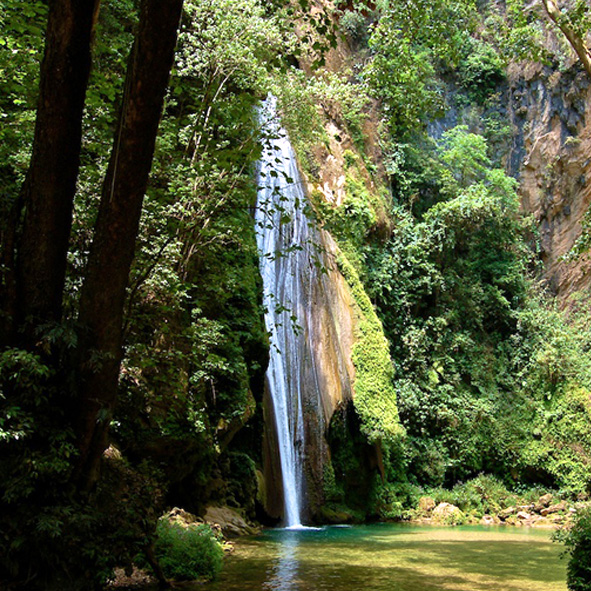
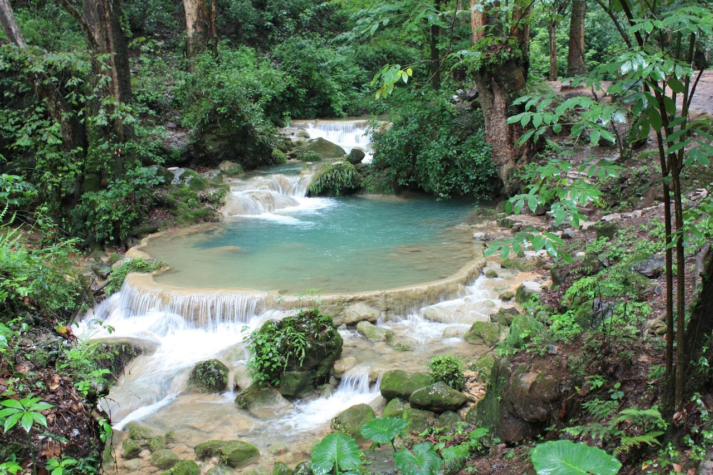
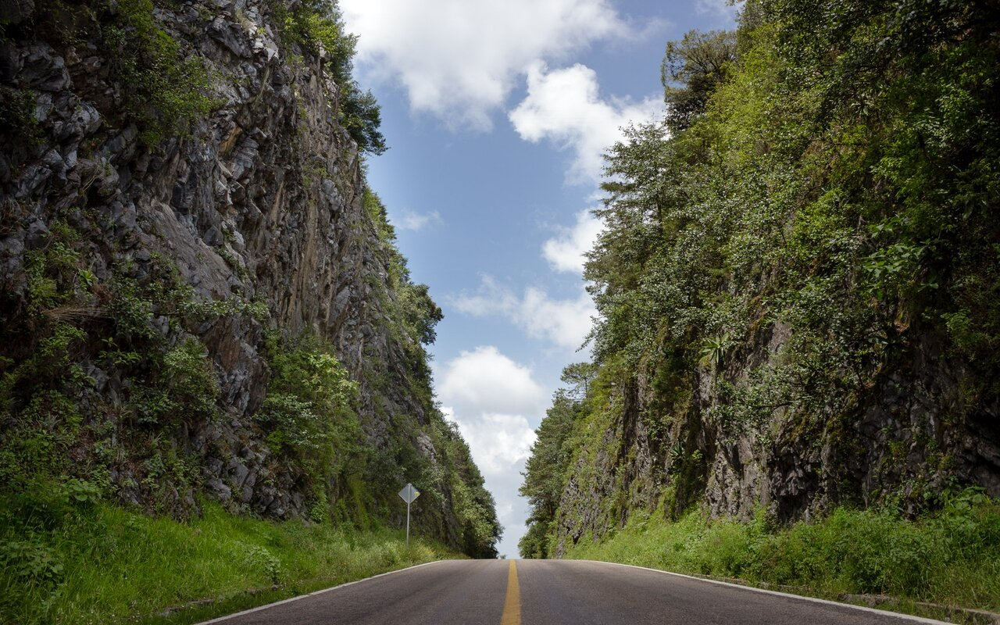
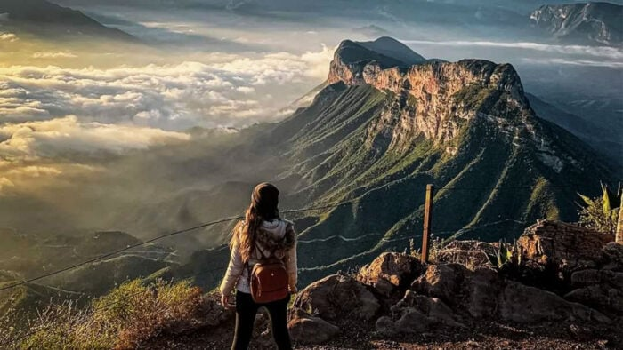
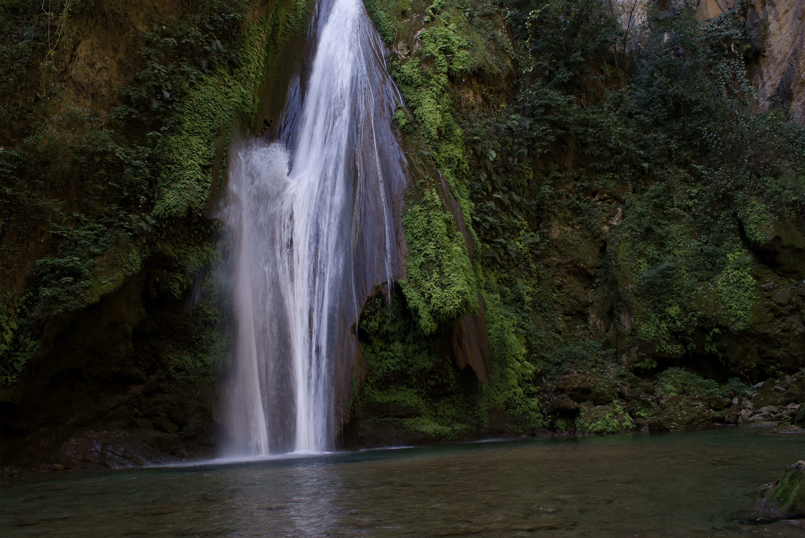

Pinal de Amoles
NEWS


- 

- 
- 
- 

- 

Nombran a Pinal de Amoles Pueblo Mágico:

Pinal de Amoles, fue declarado como el séptimo Pueblo Mágico del estado de Querétaro; así lo dieron a conocer de manera conjunta, la
titular de la Secretaría de Turismo Estatal (SECTUR), Adriana Vega Vázquez Mellado; y la presidenta municipal de aquella demarcación, Lupita Ramírez Plaza.
Vega Vázquez Mellado informó que este pasado lunes 25 de junio, la Secretaría de Turismo Federal, anunció la integración de 45 nuevas localidades al programa de
Pueblos Mágicos, que a partir de ahora cuenta con 177 demarcaciones con dicho nombramiento.
Agregó que con este nuevo nombramiento Pinal de Amoles, se suma a Amealco, Bernal, Cadereyta, Jalpan de Serra, Tequisquiapan y San Joaquín, como los siete Pueblos
Mágicos con los que cuenta la entidad, lo cual dijo, pone en valor la riqueza cultural y turística que tiene Querétaro.
"Contamos con servicios de primera categoría y guías turísticos certificados, quienes estarán encantados de acompañarles en su viaje y compartir la riqueza
cultural y natural que Pinal de Amoles tiene para ofrecer. Desde hoy, Pinal de Amoles abre sus puertas al mundo. Invitamos a todos los viajeros nacionales e
internacionales a que redescubran Pinal desde la perspectiva sustentable, con todos los encantos de este nuevo Pueblo Mágico y a vivir una experiencia
enriquecedora, llena de belleza, historia y autenticidad", subrayó.
Destacó que este nombramiento, implica continuar con el trabajo y las estrategias para que la riqueza natural de Pinal de Amoles sea protegida y resguardada, con
acciones tales como la reciente obtención de la Certificación Earthcheck para la Sierra Gorda, que la acredita como un destino turístico sustentable.
"Pinal de Amoles, nuestro nuevo Pueblo Mágico, se convierte en un faro de esperanza para el turismo sustentable en la Sierra Gorda. Enfocado en el cuidado estricto
del medioambiente, este destino se posicionará como un ejemplo a seguir, demostrando que es posible disfrutar de la naturaleza y su esplendor, sin comprometer
su conservación" sostuvo.
En su oportunidad, la presidenta municipal de Pinal de Amoles, Lupita Ramírez Plaza, agradeció el trabajo conjunto realizado con Gobierno Estatal, mismo que derivó
en la conformación del expediente que fue presentado ante las autoridades federales y que valió para obtener este nombramiento.
"No hemos sido olvidados, estamos disfrutando de la cercanía con el cielo. Nos hemos esforzado para mostrar que Pinal de Amoles ofrece experiencias únicas llenas
de naturaleza, historia y cultura. Sigamos haciendo equipo para promover el turismo y demostrar al mundo lo que tenemos por ofrecer, sigamos trabajando juntos
para hacer brillar a nuestro pueblo mágico", concluyó.
Referencia: https://codiceinformativo.com/2023/09/pinal-de-amoles-se-convierte-en-pueblo-magico/.
titular de la Secretaría de Turismo Estatal (SECTUR), Adriana Vega Vázquez Mellado; y la presidenta municipal de aquella demarcación, Lupita Ramírez Plaza.
Vega Vázquez Mellado informó que este pasado lunes 25 de junio, la Secretaría de Turismo Federal, anunció la integración de 45 nuevas localidades al programa de
Pueblos Mágicos, que a partir de ahora cuenta con 177 demarcaciones con dicho nombramiento.
Agregó que con este nuevo nombramiento Pinal de Amoles, se suma a Amealco, Bernal, Cadereyta, Jalpan de Serra, Tequisquiapan y San Joaquín, como los siete Pueblos
Mágicos con los que cuenta la entidad, lo cual dijo, pone en valor la riqueza cultural y turística que tiene Querétaro.
"Contamos con servicios de primera categoría y guías turísticos certificados, quienes estarán encantados de acompañarles en su viaje y compartir la riqueza
cultural y natural que Pinal de Amoles tiene para ofrecer. Desde hoy, Pinal de Amoles abre sus puertas al mundo. Invitamos a todos los viajeros nacionales e
internacionales a que redescubran Pinal desde la perspectiva sustentable, con todos los encantos de este nuevo Pueblo Mágico y a vivir una experiencia
enriquecedora, llena de belleza, historia y autenticidad", subrayó.
Destacó que este nombramiento, implica continuar con el trabajo y las estrategias para que la riqueza natural de Pinal de Amoles sea protegida y resguardada, con
acciones tales como la reciente obtención de la Certificación Earthcheck para la Sierra Gorda, que la acredita como un destino turístico sustentable.
"Pinal de Amoles, nuestro nuevo Pueblo Mágico, se convierte en un faro de esperanza para el turismo sustentable en la Sierra Gorda. Enfocado en el cuidado estricto
del medioambiente, este destino se posicionará como un ejemplo a seguir, demostrando que es posible disfrutar de la naturaleza y su esplendor, sin comprometer
su conservación" sostuvo.
En su oportunidad, la presidenta municipal de Pinal de Amoles, Lupita Ramírez Plaza, agradeció el trabajo conjunto realizado con Gobierno Estatal, mismo que derivó
en la conformación del expediente que fue presentado ante las autoridades federales y que valió para obtener este nombramiento.
"No hemos sido olvidados, estamos disfrutando de la cercanía con el cielo. Nos hemos esforzado para mostrar que Pinal de Amoles ofrece experiencias únicas llenas
de naturaleza, historia y cultura. Sigamos haciendo equipo para promover el turismo y demostrar al mundo lo que tenemos por ofrecer, sigamos trabajando juntos
para hacer brillar a nuestro pueblo mágico", concluyó.
Referencia: https://codiceinformativo.com/2023/09/pinal-de-amoles-se-convierte-en-pueblo-magico/.
Frenan ecoturismo por disputa comunal en Cuatro Palos:

La actividad de ecoturismo en la comunidad de Cuatro Palos en Pinal de Amoles fue suspendida pues continúa la disputada por el único camino de acceso a la zona turística con la comunidad de Tejamanil.
Mediante un comunicado publicado en sus redes sociales, los habitantes de la comunidad informaron que los habitantes de Tejamanil volvieron a controlar el acceso al único camino a esta comunidad con un cobro de acceso de 30 pesos por turista.
Denuncian cobro en mirador cuatro palos Refirieron que además de ser el único acceso para Cuatro Palos, también es el ingreso para las comunidades Mastranto y Rancho Nuevo II.
“Este camino antes era muy seguro, ahora tenemos miedo entrar y salir ya que también a nosotros nos quieren cobrar. Decirles que no es la primera vez que cierran el paso pues en el año 2019 cerraron y cobraron. Afortunadamente, la autoridad Municipal hizo su trabajo y el camino fue liberado”, señalaron.
Resaltaron que el ecoturismo es la principal actividad económica de la zona, pero decidieron suspender por las anomalías que han encontrado en esta disputa que tienen con la comunidad de Tejamanil.
“Estamos dispuestos a sacrificar nuestro derecho al trabajo, en virtud de diversas anomalías que están pasando al inicio del camino hacia el lugar donde vivimos y que además de vulnerar nuestros derechos también vulneran los de ustedes”, indicaron.
Además, acusaron a Hugo Edgardo Delgado Altamirano, Representante de la Procuraduría Agraria en el Estado de legitimar el derecho de cerrar el paso en este camino y cobrar su acceso.
Señalaron que autoridades federales, estatales y municipales deben intervenir en el conflicto para que puedan continuar con la actividad de ecoturismo en la zona.
Los mensajes que han sido difundidos están firmados por los habitantes de la localidad de Cuatro Palos, así como prestadores de servicios turísticos.
Cabe señalar que esta problemática data de 2019 cuando por primera vez cerraron el camino de acceso y solo dejaban ingresar con algún cobro. Otro incidente se registró en 2023 cuando estuvo cerrado desde el 25 de septiembre hasta el 6 de octubre. Y nuevamente en marzo de este año durante dos días sucedió lo mismo.
Referencia: https://www.diariodequeretaro.com.mx/local/suspenden-ecoturismo-de-cuatro-palos-en-pinal-de-amoles-11698144.html.
Mediante un comunicado publicado en sus redes sociales, los habitantes de la comunidad informaron que los habitantes de Tejamanil volvieron a controlar el acceso al único camino a esta comunidad con un cobro de acceso de 30 pesos por turista.
Denuncian cobro en mirador cuatro palos Refirieron que además de ser el único acceso para Cuatro Palos, también es el ingreso para las comunidades Mastranto y Rancho Nuevo II.
“Este camino antes era muy seguro, ahora tenemos miedo entrar y salir ya que también a nosotros nos quieren cobrar. Decirles que no es la primera vez que cierran el paso pues en el año 2019 cerraron y cobraron. Afortunadamente, la autoridad Municipal hizo su trabajo y el camino fue liberado”, señalaron.
Resaltaron que el ecoturismo es la principal actividad económica de la zona, pero decidieron suspender por las anomalías que han encontrado en esta disputa que tienen con la comunidad de Tejamanil.
“Estamos dispuestos a sacrificar nuestro derecho al trabajo, en virtud de diversas anomalías que están pasando al inicio del camino hacia el lugar donde vivimos y que además de vulnerar nuestros derechos también vulneran los de ustedes”, indicaron.
Además, acusaron a Hugo Edgardo Delgado Altamirano, Representante de la Procuraduría Agraria en el Estado de legitimar el derecho de cerrar el paso en este camino y cobrar su acceso.
Señalaron que autoridades federales, estatales y municipales deben intervenir en el conflicto para que puedan continuar con la actividad de ecoturismo en la zona.
Los mensajes que han sido difundidos están firmados por los habitantes de la localidad de Cuatro Palos, así como prestadores de servicios turísticos.
Cabe señalar que esta problemática data de 2019 cuando por primera vez cerraron el camino de acceso y solo dejaban ingresar con algún cobro. Otro incidente se registró en 2023 cuando estuvo cerrado desde el 25 de septiembre hasta el 6 de octubre. Y nuevamente en marzo de este año durante dos días sucedió lo mismo.
Referencia: https://www.diariodequeretaro.com.mx/local/suspenden-ecoturismo-de-cuatro-palos-en-pinal-de-amoles-11698144.html.
Pueblos Mágicos consolidan a Querétaro como importante destino turístico de México:

Acompañado también de la secretaria de Turismo de Querétaro, Adriana Vega Vázquez Mellado, el titular de la Secretaría de Turismo (Sectur) destacó la gran diversidad de atractivos de la entidad como la Peña de Bernal, el tercer monolito más grande del mundo; las Misiones Franciscanas del Siglo XVIII, además de grutas, lagunas, cavas y viñedos, o la impresionante Sierra Gorda, uno de los grandes “pulmones” de México.
Destacó las únicas y tradicionales artesanías en ixtle, mimbre, barro y textiles, entre ellas, la famosa muñeca Lele, Patrimonio Cultural de Querétaro, que se ha convertido en un ícono de esta entidad y ha representado a México en el escenario internacional; y es elaborada por artesanas de las comunidades de Santiago de Mexquititlán y San Ildefonso Tultepec.
Torruco Marqués entregó a las autoridades municipales el nombramiento de Pueblo Mágico, a Pinal de Amoles; así como la actualización de dicha designación a Bernal, Jalpan de Serra, Cadereyta, Tequisquiapan, San Joaquín y Amealco de Bonfil.
Subrayó que los 177 Pueblos Mágicos de México se han convertido en los preferidos de los turistas, debido a sus características únicas de naturaleza, cultura, gastronomía y artesanías, por lo que dicho nombramiento contribuye a la llegada de viajeros y al incremento de derrama económica, en beneficio de la población local, siguiendo la instrucción del presidente Andrés Manuel López Obrador, de hacer del turismo una herramienta de reconciliación social.
Indicó que, los 7 Pueblos Mágicos de Querétaro cuentan con una población de 316 mil habitantes, lo que representa 13.4% del total de la población del estado; concentran 2 mil 289 unidades económicas turísticas; además, estas localidades, en conjunto, tienen un valor agregado censal bruto de 944 millones de pesos y dan empleo a 8 mil 031 personas.
Con el propósito de incentivar el deseo de los turistas a visitar estas importantes plazas turísticas, el secretario de Turismo afirmó que acordó con el gobernador sumar a los 7 Pueblos Mágicos de la entidad a la iniciativa Rutas Mágicas de Color, que consiste en la pinta de 140 fachadas de viviendas y 20 murales artísticos, en colaboración de la comunidad y los tres órdenes de gobierno, así como de Comex y la organización civil Corazón Urbano; para de esta manera darle un valor agregado.
El titular de Sectur informó que también se llevan a cabo otras acciones en beneficio del turismo en el estado, como el Programa de Desarrollo Turístico de la Sierra Gorda de Querétaro, en coordinación con la Secretaría de Turismo estatal; el cual abarca los municipios de Jalpan de Serra, Arroyo Seco, Landa de Matamoros, Pinal de Amoles, San Joaquín y Peñamiller, donde se localizan tres Pueblos Mágicos.
Además, con el propósito de impulsar el turismo en las entidades productoras de la vid; Sectur en coordinación con el Consejo Mexicano Vitivinícola y las Secretarías de Turismo estatales, desarrolló el Catálogo de Productos y Rutas Enoturísticas de México, en el cual se encuentra información de los 14 estados con viñedos, entre ellos, Querétaro, en particular, la Ruta del Queso y el Vino, que involucra a los municipios de Ezequiel Montes, Tequisquiapan y Colón.
Para el segmento de romance, se han elaborado 58 catálogos, uno de ellos, incluye a los artesanos y diseñadores más reconocidos de Querétaro en la elaboración de vestidos para pedidas de mano, bodas y aniversarios.
Torruco Marqués puntualizó que en materia de capacitación y profesionalización de los prestadores de servicios de Querétaro se impartió el “Diplomado de Formación de Guías de Turistas Orientados hacia la Naturaleza”, beneficiando a 25 nuevos guías de turistas; y en la capital del estado el curso de Primeros Auxilios y Reanimación Cardio Pulmonar; aunado a ello, en esta ciudad, está programado un Diplomado de Formación de Guías de Turistas, especializado en cañonismo, del 21 de septiembre al 25 de noviembre.
Para fortalecer la atención al turismo carretero, el secretario de Turismo y el gobernador de Querétaro acordaron la entrega de 20 nuevas unidades de Ángeles Verdes para la entidad, 10 por parte de Sectur federal y 10 por parte del Gobierno estatal.
Torruco Marqués aseveró que actualmente, en Querétaro Ángeles Verdes opera con 12 unidades, cubriendo 7 tramos carreteros, que comprenden 594 kilómetros, con un aforo promedio diario de 23 mil vehículos; y con presencia en 10 municipios, el Pueblo Mágico de Bernal, y en 42 atractivos turísticos. además, anualmente se atiende en promedio a 12 mil 700 turistas en más de 3 mil 200 servicios de asistencia.
“Muchas felicidades a Pinal de Amoles por su nombramiento como Pueblo Mágico, y a los demás gobiernos municipales, por su compromiso con el turismo nacional al continuar trabajando para conservar tan significativo distintivo”, concluyó Torruco Marqués.
Por su parte, el gobernador de Querétaro, Mauricio Kuri González, afirmó: “En Querétaro nos enorgullecemos de lo que somos y de lo que tenemos en nuestras manos. Nuestro glorioso pasado es el cimiento de un futuro prometedor. Pinal de Amoles se incorpora con orgullo a la familia de Pueblos Mágicos de Querétaro. Juntos continuaremos forjando el camino hacia la belleza incomparable de nuestro estado, elevándolo a ser el rincón más hermoso y mágico de México”.
Agradeció a la Secretaría de Turismo, a su titular, Miguel Torruco Marqués, y a su Comité Técnico de Evaluación y Verificación, por haber sabido apreciar la importancia, la belleza y la singularidad de Pinal de Amoles, pero sobre todo la tenacidad y el cariño que su gente siente por esta tierra.
En su oportunidad, la secretaria de Turismo de Querétaro, Adriana Vega Vázquez Mellado, precisó que se estima que este nuevo Pueblo Mágico, recibe alrededor de 30 mil turistas que pernoctan en hoteles, cabañas y campamentos cada año, generando una derrama económica que supera los 60 millones de pesos.
Destacó que sus paisajes naturales son un espectáculo para los sentidos, desde sus majestuosos bosques hasta sus impresionantes formaciones rocosas; a su vez Pinal de Amoles es un crisol de cultura y tradiciones arraigadas en su gente.
En este evento, estuvieron presentes también las y los presidentes municipales de Pinal de Amoles, María Guadalupe Ramírez Plaza; de Amealco de Bonfil, René Mejía Montoya; de Ezequiel Montes, Magda Guadalupe Pérez Montes; de Cadereyta de Montes, Miguel Martínez Peñaloza; de Jalpan De Serra, Efraín Muñoz Cosme; de San Joaquín, Carlos Manuel Ledesma Robles; de Tequisquiapan, José Antonio Mejía Lira; entre otras autoridades e invitados.
Referencias: https://www.gob.mx/sectur/prensa/pueblos-magicos-consolidan-a-queretaro-como-importante-destino-turistico-de-mexico.
Incendio consume decenas de hectáreas en Pinal de Amoles:

La Coordinación Estatal de Protección Civil de Querétaro (CEPCQ) ha informado que se ha logrado un avance significativo del 70% en el control y mitigación del incendio forestal que se presenta en el municipio de Pinal de Amoles en Querétaro.
A través de un comunicado oficial, se ha confirmado que hasta el momento no se tienen registros de personas lesionadas a causa de este siniestro. Sin embargo, se reportan afectaciones en unas 80 hectáreas de vegetación, con la quema de hojarasca, matorral y especies de pino y encino.
Para hacer frente a esta emergencia, se ha establecido un centro de operaciones unificado, desde donde se coordinan las labores dirigidas a lograr la mitigación total del incendio en las próximas horas. Estas acciones incluyen el ataque directo al fuego, la realización de brechas cortafuegos y el monitoreo constante de las condiciones climatológicas.
La respuesta ante este desafío ha sido coordinada y solidaria, con la participación de más de 230 elementos de diversas instituciones, entre ellas la CEPCQ, la Policía Estatal, la Coordinación de Protección Civil y Policía Municipal de Pinal de Amoles, la Secretaría de Salud, la Secretaría de Desarrollo Agropecuario (Sedea), la Comisión Nacional Forestal (Conafor), la Secretaría de la Defensa Nacional (Sedena), los Bomberos de Jalpan de Serra y voluntarios de la zona.
Como medida preventiva, se han habilitado instalaciones como el DIF Municipal, la Casa de la Cultura y el Auditorio Municipal como albergues temporales. Además, se está realizando la entrega de víveres y se está brindando asistencia a los habitantes de la región y al personal involucrado en las labores de mitigación del incendio.
Se hace un llamado a la población en general para que siga las instrucciones de las autoridades y se mantenga informada a través de medios oficiales, con el fin de evitar la difusión de información no verificada que pueda generar confusión o pánico colectivo.
Derivado de la gravedad del siniestro, se han evacuado comunidades del municipio de Pinal de Amoles como medida preventiva ante el riesgo de que el incendio forestal pudiera afectar a las poblaciones cercanas.
Se informa a la ciudadanía a mantenerse alerta y colaborar en las labores de prevención y combate del fuego, siguiendo las indicaciones de las autoridades.
Referencia: https://www.elhorizonte.mx/nacional/incendio-consume-decenas-de-hectareas-en-pinal-de-amoles/4959745941.